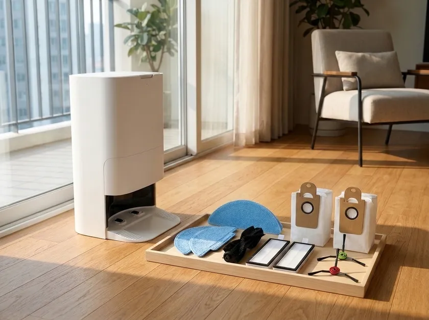

에브리봇 (EVERYBOT)
에브리봇 Q3 플러스 물걸레 냄새·흡입력 점검｜24시간 교대 건조와 1년 세트
글·구성: 제이상점 · 기종별 1:1 호환 실물 점검 · 교체 주기 비교표 · 스마트스토어 패키지 안내

핵심 관리 · 선택 체크포인트
- 청소 예약은 매일 꼬박꼬박 돌아가는데 요즘 부쩍 주말 대청소 뒤 에브리봇 Q3 플러스 도크 주변에서 눅눅한 걸레 냄새가 올라오거나 카펫·매트 경계에서 브러시 회전 소리가 커지는 현상 때문에 신경 쓰이셨나요?
- 냄새와 흡입력 차이를 만드는 에브리봇 Q3 플러스 교대 케어 포인트: 실사용 만족도를 가르는 핵심 부위는 단연 도톰한 그레이 원형 극세사 물걸레 패드 쌍과 오렌지·블랙 V자 메인브러시입니다.
- 에브리봇 Q3 플러스 냄새·흡입력 복원 부위별 점검 기준표: 번거로운 분해 수리 전에 아래 세 가지 핵심 구간만 순서대로 교대 점검해 주셔도 바닥 뽀송함과 집진 효율이 눈에 띄게 달라집니다.
- 여분 교대가 편해지는 에브리봇 Q3 플러스 기간별 옵션 선택 가이드: 물걸레와 워셔블 필터는 ‘씻어서 말리는 동안 끼워 둘 마른 여분’이 최소 1~2세트 더 있어야 관리 스트레스가 사라집니다.
- 현재 대표 구성 기준가 71,900원대(옵션·할인 혜택에 따라 스토어 결제 화면 기준 상이)로 운영 중이니 우리 집 청소 주기와 남은 재고를 대조한 뒤 제이상점 에브리봇 Q3 플러스 스마트스토어 상세 옵션에서 가장 실속 있는 구성을 선택해 보세요.
실물 부품 디테일 · 관리 구성 이미지



부품 규격 · 점검 기준표
| 집중 관리 포인트 | 에브리봇 Q3 플러스 적용 부품 규격 | 쾌적함 유지하는 실전 교대 루틴 |
|---|---|---|
| 물걸레 쉰내 차단 루틴 | 그레이 원형 패드 예비분 교대 부착 | 젖은 패드를 본체에 방치하지 않고 세탁 후 통풍 건조하며 마른 패드 즉시 장착 |
| 흡입력 저하 복원 체크 | 화이트 프레임 주름 필터 + V자 브러시 축 | 필터 주름 사이 미세먼지 털기 후 물세척 시 반드시 하루 이상 완전 건조 |
| 스테이션 위생 집진 관리 | 화이트 플라스틱 칼라 밀폐 더스트백 | 장마철·환절기에는 봉투가 가득 차기 전 교체해 도크 내부 냄새 배임 예방 |
💡 교체 주기가 겹치는 필터·브러시·물걸레·더스트백은 단품 배송비를 여러 번 내기보다 에브리봇 Q3 PLUS 기간별 세트(3개월·6개월·1년)로 미리 구비해 두면 물세척 후 24시간 교대 건조까지 끊김 없이 관리할 수 있습니다.
자주 묻는 질문 (FAQ)
Q. 에브리봇 Q3 플러스 필터를 물로 씻은 뒤 드라이기로 말려서 바로 끼워도 괜찮나요?
A. 열풍 드라이기는 필터 프레임 변형이나 여과지 손상을 유발할 수 있어 피해야 합니다. 흐르는 물로 가볍게 헹군 뒤 통풍이 잘되는 그늘에서 최소 24시간 말리고, 그사이에는 새 예비 필터를 장착해 모터를 보호해 주세요.
Q. 원형 물걸레 패드 한쪽만 더 빨리 닳는 것 같은데 1장만 바꿔도 될까요?
A. 새 패드와 헌 패드를 섞어 끼우면 좌우 바닥 마찰력과 두께 차이로 주행 밸런스가 흔들릴 수 있으므로 항상 2매 한 쌍을 동시에 교대해 주시는 것이 좋습니다. 다른 방에서 함께 쓰는 샤오미 로봇청소기 S20 1년 소모품 패키지 (서브 청소기용) 같은 서브 청소기 패드도 마른 여분 위주로 관리해 보세요.
제이상점 1:1 검수 추천 패키지 · 구매 안내
메인 추천 구성
대표 구성 참고가 71,900원대 (옵션·쿠폰별 스마트스토어 결제 화면 기준)
1년 세트 (세제 미포함)6개월 세트 (세제 미포함)3개월 세트 (세제 미포함)
![[호환] 샤오미 S20 소모품 물걸레 브러쉬 필터 부품 악세사리 제이상점 1년 패키지](../../assets/img/xiaomi-s20-product-dbca8281.webp)
함께 많이 찾는 보충 구성
대표 구성 참고가 60,400원대 (옵션·쿠폰별 스마트스토어 결제 화면 기준)
1년 세트 (세제 미포함)6개월 세트 (세제 미포함)3개월 세트 (세제 미포함)
☑️ 주문 전 확인해 두면 좋은 제이상점 안심 포인트
· 기종별 1:1 전용 규격 검수: 모델명·연식에 맞는 호환·정품 구성을 검수해 오주문 불안을 줄였습니다.
· 해외직배송 미리 주문 팁: 중국 구매대행·해외직배송 상품이므로 마지막 여분 1개를 꺼내 쓰는 시점에 개인통관고유부호와 함께 여유 있게 주문해 두시면 훨씬 경제적인 비용으로 끊김 없이 교체하실 수 있습니다.
· 기종별 1:1 전용 규격 검수: 모델명·연식에 맞는 호환·정품 구성을 검수해 오주문 불안을 줄였습니다.
· 해외직배송 미리 주문 팁: 중국 구매대행·해외직배송 상품이므로 마지막 여분 1개를 꺼내 쓰는 시점에 개인통관고유부호와 함께 여유 있게 주문해 두시면 훨씬 경제적인 비용으로 끊김 없이 교체하실 수 있습니다.
📖 더 많은 가정 내 사용 스토리와 상세 후기가 궁금하시다면
📱 네이버 블로그 모바일 원문 보기 ↗